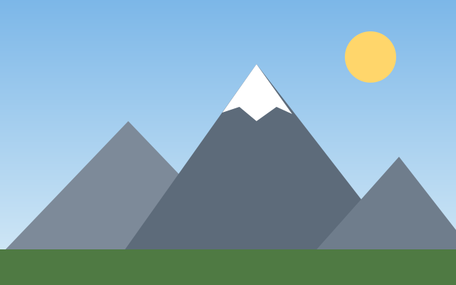

Wandern ist der einfachste Sport der Welt: Man braucht fast nichts, kann überall anfangen und kommt trotzdem an Orte, die man sonst nie sehen würde.

Für eine Tagestour reicht wenig. Gute Schuhe sind aber wirklich wichtig.
Lieber zu kurz planen als zu lang. Der Rückweg dauert immer länger, als man denkt.
Viele Tourenvorschläge findest du beim Deutschen Alpenverein. Meine eigenen Lieblingstouren stehen auf der Seite Meine Touren.